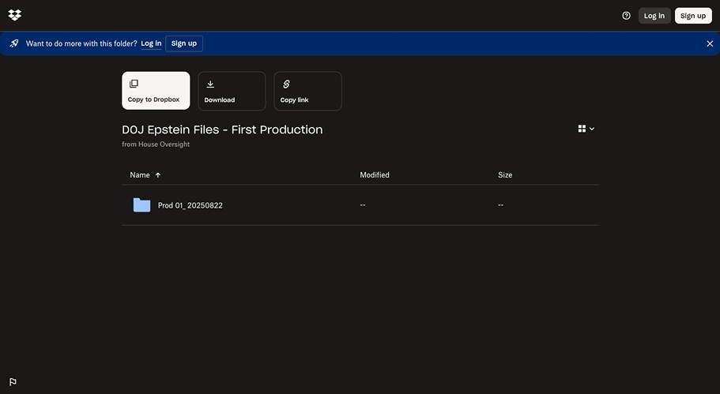
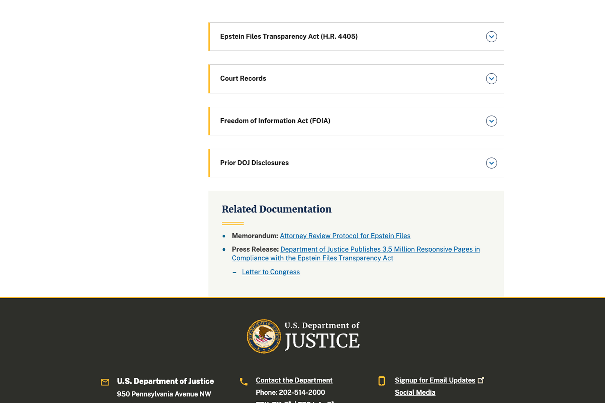
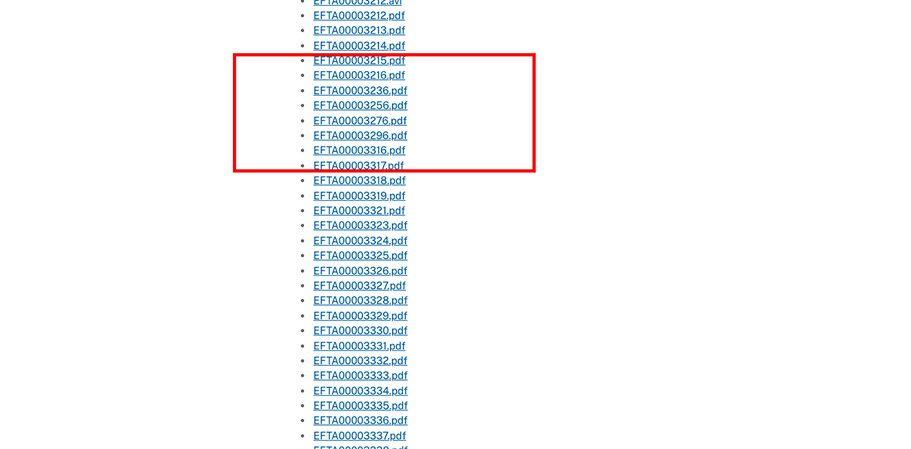
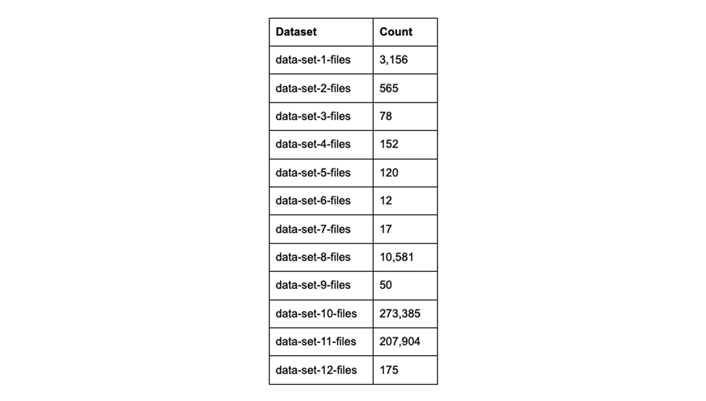
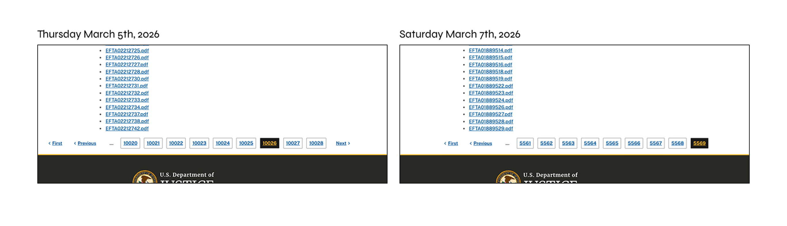
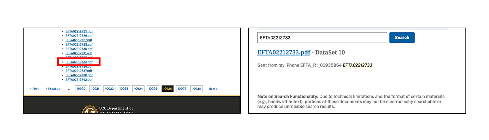
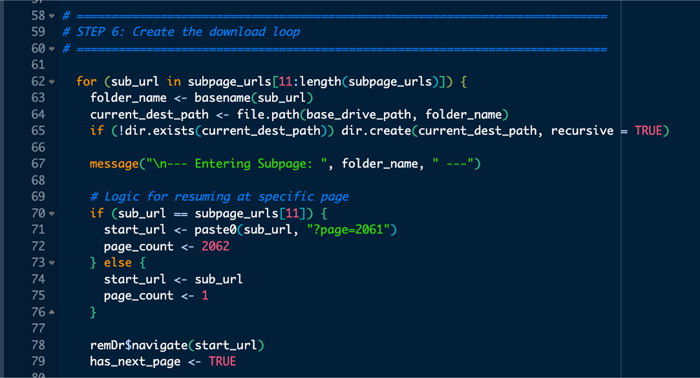
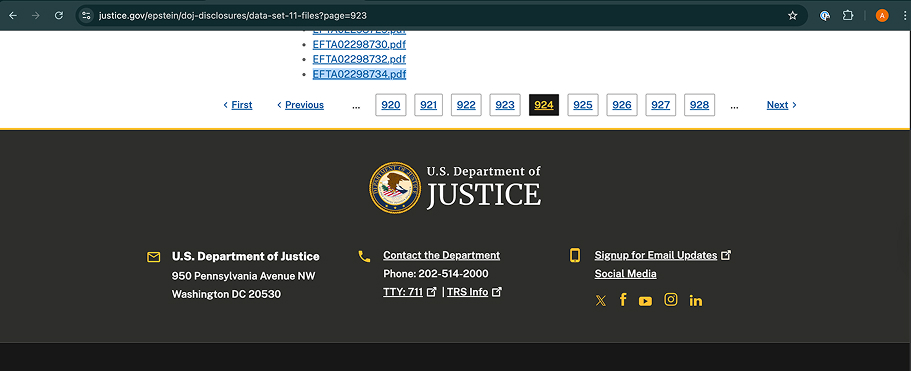

I am studying computational social science, and for my master’s thesis I am analyzing the Epstein Files. How did we get here? Well, I got feedback from a job that I “didn’t have enough experience working with data”, which I found strange. My entire master's is dedicated to data science and machine learning - conducting exploratory analysis, running regressions, and data visualization. However, maybe they meant experience putting the data and metrics into dashboards. So I decided to dedicate my master's thesis to processing the Epstein files, and publishing the findings in a dashboard for public consumption.
My project will consist of several steps:
- download the files using a web scraper
- process the files to determine type (images, videos, court records, emails)
- use optical character recognition (OCR) to extract the text of the emails
- conduct sentiment analysis and other natural language processing analysis techniques on the emails
- run unsupervised machine learning algorithms to create clusters of the emails for analysis
- create a dashboard for findings
I decided to accompany this work with a series of blog posts to track findings as I go along. Even just scraping the files from the sites has proven enlightening; there is rampant misinformation around the Epstein files that is being reported by major news sources. What was supposed to be an effort of transparency to the general public has left constituents more confused than ever.
What are the Epstein files?
The Epstein files refers to two releases of files by the United States government. In September 2025, the Oversight Committee published 33,295 pages. In November 2025, the US government passed the Epstein File Transparency Act, mandating larger releases of files. In response in January 2026, the Department of Justice (DOJ) published 3.5 million additional pages.
The Oversight Committee files were released on a Google Drive link , which, as of writing, isn’t working. They have a backup Dropbox link. Files are things like videos (.MP4), photos (.JPEG), and audio (.WAV).

The Department of Justice files are hosted on a DOJ website. They are split into the Epstein Files Transparency Act (EFTA), previously released court records, previously released files under the Freedom of Information Act (FOIA), and prior DOJ disclosures. The EFTA files are split in 12 datasets. While the Oversight Committee has variety in their document types (.JPEG, .MP4, .WAV), everything in the DOJ release is a PDF, with a naming convention of the law name (EFTA) followed by an eight digit number.

It all seems normal, right?
Wrong. First, the usability of the site is atrocious. While everything is a PDF, the document might contain images, emails, or court records. There is no discernible information about what the file might contain.
The files are not designed to be downloaded – they are not in sequential order and skip over large chunks. This is to be expected with redacted files; it is to be assumed that files XX through XX are redacted. However, from a research standpoint, it is difficult to tell if the scraper captured all files. Are the files missing because they don’t exist for download or because of a technical failure on the scraper’s end?

Most shockingly, the 12 datasets released by the EFTA have starkly different document counts. Dataset 6 has 12 documents, while dataset 10 and 11 have closer to 200,000.

Why are the documents organized in this way? From a first glance, it doesn’t look to be organized by document type: photos and emails are scattered across nearly all the datasets. Future computational analysis will aim to understand why these files were organized in this way upon their release and deduce any meaning.
There has been a huge lack of transparency
In scraping the files, half of dataset 10 went offline overnight and still hasn’t come back. On Thursday March 5th, a classmate and I looked at the number of pages in dataset 10 to estimate how long it would take to download. It was far more than 10,000; at 50 files per page, that meant 500,000 files. I assumed that would take all weekend to download, and left the scraper to run continuously Friday night. Saturday morning, March 7th, when I checked on the scraper it had finished scraping. There was no way it had managed to download the 500,000 files in dataset 10, plus whatever else remained in dataset 11 and 12 overnight. When I looked at my external hard drive, dataset 10 had 5,500 files in it. Well, that’s weird. So I went back to the DOJ website and saw dataset 10 now only had 5,569 pages. Nearly 220,000 files were taken offline overnight. The DOJ had no indication that this happened, there was no announcement for why it happened, no estimate of when they would be back, and as of April 7th, the files are still not back online.

What happened to these files? It’s unclear. I’m not the only researcher to have this issue. One reddit user called “Agerian” had a similar problem in dataset 10, where they received a warning screen saying “the list is still generating. Please check back later.” Agerian also believed they were deleted, but claimed files they were looking at have come back online. Additionally, the files I lost in dataset 10 are still available in the search function. It could be that this is a technical error from the DOJ website.

Another theory is that the files went offline to undergo further redaction. In February, there were several complaints that the files had published names, nicknames, and other identifiers of victims. However, these complaints surfaced in February, long before I looked at the files March 5th.
The main problem here is the lack of transparency of what is going on with the files – the DOJ is not transparent as to when they are taking down files or why. The takedowns only seem to be happening in the largest datasets - dataset 10 and dataset 11.
Another issue around transparency is the reporting by the media. The original DOJ press release claimed 3.5 million new pages of content. BBC reported shortly after that there are “millions of new files.” The Guardian also claims three million files. These numbers scare the public and deter investigation. Who possibly has time to look at 3.5 million files? Even my thesis supervisor wanted to deter me from looking at the files because of their sheer volume.
However, there are only XX total files and XX total number of pages. This is across both the Oversight Committee’s release and the DOJ’s release. A big goal of my thesis is to increase transparency around the files. Reporting accurate numbers is a critical first step in doing so.
What did I learn about running a web scraper at scale?
I had learned web scraping in my data harvesting class, but never more than 600 items and a few web pages. This is my first project at such a large scale. My original (naively ambitious) thought was to run the scraper overnight one night and have all files. When I woke up after the first night, I hadn’t even scraped through dataset three. I ended up running the scraper nights, weekends, and any moment I didn’t need to actively use my computer. After three weeks, I decided to install a second instance of RStudio to be able to work on schoolwork and scrape the files at the same time.
The original scraper was designed to start from the beginning (dataset 1) and check to see if pages were already downloaded before moving on. However, this was not scalable. The scraper wasted 1-2 hours checking through every page before it could even begin to download anything new. I amended the scraper to be able to restart from wherever I specified, so I was able to set it to begin in dataset 10 on page 305, for example.

I unfortunately didn’t notice until I had run this a few times that the DOJ had messed up their pagination. When I was specifying page 1138, it was really pointing to page 1139. This meant I skipped pages every time I stopped and started the scraper.

While this caused some panic, everything was cleaned up in a final scrape, run on XX date.
Another issue I ran into around dataset 10, was the scraper slowing down significantly. This could’ve been from a few things – did the DOJ figure out I was using a scraper and throttle my download so it times out? To avoid this, I created a variable with three different IDs and three different delay timers, so my patterns wouldn’t be so predictable. Was my code editor storing too much local memory? I added code to clear local caches after each page’s download. Was the code editor struggling to open a folder with 200,000 files? I named the existing file to dataset_10_ignore so that the code would create a new dataset_10 folder. The combination of these things did end up returning the speed to its original. However, this meant that I spent time running bash command-line code to recombine the folders.
If I were to redo this portion of the project, I would’ve left the scraper to run once start to finish. This would’ve avoided the pagination issue, the speed issue, and writing unnecessary lines of code. I would’ve downloaded a second instance of RStudio from the beginning to be able to work on other projects. However, we don’t live in a perfect world, I don’t own two macbooks, and I needed to be able to take my laptop with me to class.
As for next steps, I need to use pixel recognition and optical character recognition (OCR) to classify the types of documents – photos, emails, and court documents – to select just the emails for analysis.